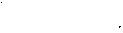

Doktor Angelicus
Hastanenin içinde entrika ağları örülmüştü, yeni gelen herhangi birinin ilk hatası sessizce bekleniyordu. Pajaczkowski'yi yerinden etmek isteyen biri vardı, adam yönetimde yakın zamanda bir değişiklik olacağına dair söylentiler yayıyor ve her anlaşmazlığı sevinçle karşılıyordu, ama Stefan bu cüceleşmiş kişilikleri akvaryuma bakan birisi gibi seyrediyordu, ilgiliydi, ama olayların dışındaydı.
Sekulowski ile arkadaşlık yapmak Stefan'ın hoşuna gidiyordu. İki adam her zaman dostane bir şekilde ayrılıyordu, ama şairin kendi hayal dünyasında bu kadar rahat yaşaması, Stefan'ı rahatsız ediyordu. Kendi aklının her şeyin ölçüsü olduğunu düşünen Sekulowski Stefan'a sadece laf yarıştırılacak birisi gözüyle bakıyordu.
Varşova'da toplu tutuklamalar yapıldığına dair haberler geldi. Alelacele kurulan gettolara ilişkin söylentiler yayıldı. Bununla birlikte bu gibi hikayeler, hastane duvarlarından süzülerek geçtikten sonra, bulanık ve inanılmaz geliyordu. Eylül çatışmalarından kalma, savaş sırasında kısa süreli sinirsel rahatsızlıklar geçiren birçok asker, artık hastaneden ayrılıyor du. Bu durum biraz ferahlık sağlamıştı; bazı koğuşlarda daha önce hastalar tek bir yatakta ikişer üçer yatıyorlardı.
Bununla birlikte malzeme sorunu -özellikle ilaç konusunda- artıyordu. Pajpak sorunu dikkatle ele almış ve çok sıkı ekonomik önlemler koymuştu. Scopolamine, morfin, uyuşturucular, hatta bromin kilit altında tutuluyordu. Şok tedavisinde kullanılan ensülin'in yerini cardiazol almıştı ve bunun da geride kalan kısmı tutumlu bir şekilde harcanıyordu. İstatistikler belirsizdi. Alınan rakamlardan akıl hastalarıyla ile ilgili kesin bilgiler henüz ortaya çıkmamıştı. Bazı kategorilerdeki sayılar azalıyor, diğerlerinde sabitleşiyor veya artıyordu. Kararsız bir dönemdi.
Nisan ayı geldi. Yağmurlu ve yeşillikli parlak günler aralık ayından borç alınmışa benzeyen karlı dönemlerle kesiliyordu. Stefan bir pazar günü göz kapaklarından girip rüyalarını mora boyayan kuvvetli bir güneşle erkenden uyandı. Pencereden dışarıya baktı. Manzara ünlü bir ressamın kalın fırça darbeleriyle yaptığı bir desene benziyordu, aynı desenin başka çeşitlemeleri, her biri değişik renk ve ayrıntılarla, ilkini izliyordu. Yüne benzer bir sis yamaçların arasından uzun vadiye, uyuyan hayvanların sırtı gibi süzülmüş ve dalların koyu renk fırça darbelerini örtmüştü. Sisin içinden, sanki fırça kaymış gibi, düzgün olmayan karanlık şekiller orada burada görünüyordu. Daha sonra yukarıdan beyazın içine bir yudum altın sızdı, kısa süreli bir kararsızlık yaşandı, beyaz sarmallar ortaya çıkıp ufukta bir buluta dönüşmek için uzaklaştı, bu da az sonra inceldi ve geriledi, sonunda güneş çıplak bir kestane ağacı gibi bütün saflığıyla aradan parladı.
Stefan bir yürüyüşe çıktı. Yoldan ayrıldı. Toprak baştan aşağıya yeşillenmişti: Yeşillik hendeklerden fışkırmış, taşların arasından fırlamıştı; açılan tomurcuklar uzaktaki ağaçları narin yeşil bulutlarla örtmüştü. Stefan ılık bir rüzgar altında bir tepeye tırmandı ve bir önceki yılın kuru, hışırdayan otlarının arasından sırta ulaştı. Tarlalar aşağıda, bir köylü kıyafetindeki hafif kirli şeritler gibi, uzanmıştı. Mavi ve beyaz su damlaları her bir sapın üzerinde parlıyor, her biri dünyayı parça parça yansıtıyordu. Uzaktaki orman ufka doğru su altındaki gümüş bir heykel gibi kıvrılıyordu. Aşağıdaki yamaçta ağaçların tepeleri, gökyüzüne karşı, yapışkan kahverengi tomurcuk yığınları gibiydi. Stefan onların yönüne doğru yürüdü. Bir çalı yığını yolunu kapatmıştı, çevresini dolaştığı sırada, derinden gelen nefes sesleri duydu.
Karmakarışık bir çalılığa yaklaştı. Sekulowski çalılığın içinde çömelmişti. Stefan adamın kahkahasını zorlukla duyabildi, ama derisi diken diken oldu.
“Buraya gelin, doktor,” dedi şair, başını kaldırıp bakmadan.
Stefan dalları iterek girdi. Ortada daire şeklinde bir açıklık vardı. Sekulowski küçük bir toprak tümseğe bakıyordu, orada karıncalar ince sıralar halinde kırmızımsı bir solucanın çevresinde dolaşıyordu.
Stefan bir şey demedi. Sekulowski Stefan'ı baştan aşağıya süzdü, sonra ayağa kalkıp, “Bu sadece bir model,” dedi.
Şair Stefan'ın kolunu tutup çalılıktan uzaklaştırdı. Hastane uzakta gri ve küçük bir şekil olarak görünüyordu. Ameliyathane bir çocuğun düşürmüş olduğu kırmızı bir oyuncak küp gibi parlıyordu. Sekulowski otların üzerine oturdu ve bir not defterine hızla yazmaya başladı.
“Karıncaları seyretmek hoşuna mı gidiyor?” diye sordu Stefan. “Hoşuma gitmiyor, ama bazen yapmak zorunda kalıyorum. Eğer bizler var olmasaydık, doğadaki en korkunç şey böcekler olurdu. Çünkü yaşam mekanikliğin karşıtıdır ve mekaniklik de yaşamın karşıtıdır. Ama böcekler yaşayan mekanizmalardır, bir maskaralık, doğanın bir şakası. Tatarcık, tırtıl, bok böceği - onların karşında titremeliyiz. Tehlike, en büyük tehlike.”
Şair başını eğdi ve yazmasını sürdürdü. Stefan adamın omuzunun üzerinden bakarak son kelimeleri okudu: “...dünya - Tanrı ile hiçlik arasındaki savaş.”
Bunun bir şiir mi olacağını sordu.
“Nereden bileyim?”
“Sen bilmezsen, kim bilecek?”
“Psikiyatrist olmak istiyorsun, öyle mi?”
“Şiir iki dünya arasında duruyor: Görebildiğimiz dünya ve içinde yaşamamız gereken dünya,” diye başladı Stefan tereddütle, “Mickiewicz şöyle yazmıştı, 'Bizim ulusumuz, lav gibi...”'
“Burası dershane değil,” diye sözünü kesti Sekulowski, mırıldanarak. “Mickiewicz canı ne isterse söyleyebilir, çünkü adam bir romantikti, ama bizim ulusumuz inek tezeği gibidir: Dışarısı kuru, içinde ne olduğunu sen bilirsin. Hem de sadece bizim ulusumuz değil. Ama lütfen benimle ders verir gibi konuşma, çünkü midemi bulandırıyor.”
Şair bir süre güneşle aydınlanmış manzarayı seyretti.
“Şiir nedir, o halde?”
Sekulowski içini çekti.
“Ben şiiri dökülen bir sıvanın arkasındaki çok renkli bir şerit gibi görürüm, ayrı ve parlak parçacıklar halindedir. Onlarda hapsedilmiş elleri, ufukları, bakışları ve nesneleri birleştirmeye çalışırım. Gün ışığında olan şekli böyledir. Geceleyin -çünkü bazen geceleyin de meydana gelir- şiirler kendi kendilerini tamamlamak için büyüyen sarmal kıvrımlar şeklindedir. En zor olan şey bilinç uyandığı vakit, onları tutabilmektir. “
“İlk tanıştığımız gün okumuş olduğun o şiir, gündüz müydü, gece miydi?”
“Bir gündüz şiiriydi.”
Stefan şiiri övmeye kalkıştı, ama sertçe susturuldu. “Saçma. Bir şeyden anladığın yok. Şiir hakkında ne bili yorsun ki? Yazma işi lanet bir zorunluluktur. Birisi en çok sevdiği insanın yanında durup onun ölmesini seyredebilirse, ölenin son titreyişine kadar tanımlanmaya değer her ayrıntıyı, elinde olmaksızın, zihnine kazırsa, işte gerçek yazar odur. Dangalağın biri itiraz edebilir: Ne kadar berbat bir şey! Hayır, berbat bir şey değil, sadece acı çekmektir. Bu bir meslek değil, masa işi yapmak gibi seçebileceğin bir şey değil. Huzur içinde olan yazarlar, ancak yazmayanlardır. Böyle olan bazıları da var. Onlar bir olasılık denizi içinde yuvarlanıp giderler. Bir düşünceyi ifade etmek için, ilk önce onu sınırlamak gerek, bu da onu öldürmek demektir. Konuştuğum her kelime başka binlercesini elimden alıyor ve yazdığım her satır bir başkasını kaybettiğimi gösteriyor. Yapay bir belirlilik yaratmak zorundayım. O sıva döküldüğü zaman, derinde, altın renkli parçacıkların altında, tanımlanamaz bir uçurumun yattığını hissediyorum. Orada olduğuna hiç şüphe yok, ama ona ulaşmak için harcanan her gayret başarısızlıkla sonuçlanıyor. Ve korkum...” Şair sustu, derin bir nefes aldı.
“Hissettiğim her kelime sonuncusudur. Daha fazla gidemeyeceğim demektir. Şüphesiz sen anlamıyorsun. Anlayamazsın. Korku - onu nasıl anlatabilirim? Çünkü kelimeler ağzımdan bir sel anında kapının altından içeriye dolan su gibi. dökülüyor. Kapının arkasında ne olduğunu bilmiyorum. Bunun son dalga olup olmadığını bilmiyorum. Akışın hızını kontrol edemiyorum. Sen ise benim siyasal bir tavır koymamı istiyorsun. Ben sadece hakkında yazdığım insanlar yoluyla özgür olabilirim, ama bu da bir hayal.
“Kimin için yazıyorum? Mağara adamının günleri geçti. O dostlarının kafatasları içindeki sıcak beyinleri yedi ve mağara duvarlarına o zamandan beri bir daha eşi görülmemiş sanat eserleri çizmek için kendi kanını kullandı. Rönesans, dahileri ve kazıkta cızırdayan sapkınlarıyla geçip gitti.
Denizlere ve rüzgarlara binmesini öğrenmiş çapulcu orduları gelip geçti. Artık kışlada oturan cüceler, teneke kutularda müzik ve giyildiği zaman yıldızları görmeyi engelleyen miğferler çağında yaşıyoruz. Eşitlik ve kardeşliğin geleceğini söylüyorlar. Niçin eşitlik, niçin özgürlük, eğer eşitsizlik hayallerin ve umutsuzluk ateşlerinin yaratılmasına neden olursa ve tehlike insanoğlundan patlayıncaya kadar yiyip içmekten daha değerli bir şeyi sıkıp çıkarabilirse. Bu büyük farklılıkları, bu gerilimleri kaybetmek istemiyorum. Eğer bana kalsaydı, sarayları da, gecekondu mahallelerini de, kaleleri de korurdum!”
“Birisi bir zamanlar bana çok duygulu bir Rus prensinin hikayesini anlatmıştı,” dedi Stefan. “Bir tepenin üzerinde, yukarıdan köye bakan sarayının penceresinden güzel bir manzara görünüyormuş. Ama damı saman örtülü birkaç kulübe manzarasını kapatıyormuş, bu yüzden onların yakılmasını emretmiş ve geride kalan kararmış direkler tam istediği havayı vermiş.”
“Bana kusur bulma,” dedi Sekulowski. “Kitleler için çalışmamız mı gerek? Ben Mephisto değilim, doktor, ama her şeyi de enine boyuna düşünmeyi severim. Hayırseverlik mi? Hormonları kurumuş diplomalı bakireler hayır işleri yapmaya mahkûm edilmişlerdir ve eğer devrim teorisi hakkında konuşmak istersen, dilencilerin buna vakti yoktur. Bu iş karnı tok olan asilerin işidir. Her zaman insanlara zarar vermiştir. Huzur, sakinlik ve rahatlık arayan herkes onu bu hayatta değil, mezarında bulacaktır. Ama neden bu kadar soyut konuşmalı? Ben kendim hayal bile edemeyeceğin kadar bir yoksulluk içinde büyüdüm, doktor. Biliyor musun, üç aylıkken çalışmaya başladım. Annem beni bir dilenci kadına ödünç vermiş, kadın kollarında bir bebek olursa daha iyi iş çıkaracağını düşünmüş. Sekiz yaşımdayken, bir gece kulübünün kapısında dolanırdım ve şık kalabalık dışa riya çıkınca, fok derilerine, kunduz ve misk farelerine tükürürdüm, elimden geldiğince kuvvetli bir şekilde onların parfümlü kürklerine ve o kadınların üzerine, ağzım kuruyuncaya kadar tükürürdüm. Şu anda neye sahipsem, onlar için mücadele ettim. Gerçek yeteneği olan insanlar her zaman başarılı olurlar.”
“Dahilerden de herkese gübre muamelesi yapması beklenir, öyle mi?”
Stefan bazen kendisi de bu şekilde düşünüyordu. Sanki kendi kendisiyle konuşuyordu. Şairin öfkelendiği zaman, saldırgan olduğunu unutmuştu.
“Ah, evet,” dedi Sekulowski, dirseklerinin üzerine geriye doğru yaslanıp parlak bulutlara küçümseyen bir gülümsemeyle bakarak. “Gelecek kuşaklar için gübre olmak istemez misin? Kemiklerini sunağın üzerine koymak istemez misin? Beni yalnız bırakın, doktor. Tek katlanamadığım şey can sıkıntısıdır.”
Stefan'ın duyguları incinmişti. “Varşova'daki kitlesel tutuklamalara, insanların Almanya'ya götürülmesine ne diyorsun? Bu seni rahatsız etmiyor mu? Buradan çıkınca tekrar Varşova'ya mı döneceksin?”
“Neden tutuklamalar beni on üçüncü yüzyıldaki Tatar istilasından daha fazla rahatsız etsin? Kazara benimle zamandaş oldukları için mi?”
“Tarihle münakaşa etme. Tarih her zaman haklıdır. Kafanı kuma gömemezsin.”
“Tarih kazanacaktır. En güçlünün sağ kalması,” dedi şair. “Kendi başıma bir dünya olduğum halde, olayların akışı içinde sadece bir toz zerresi olduğum doğru, ama hiçbir şey beni bir toz zerresi gibi düşünmeye zorlayamayacak!”
“Almanların akıl hastalarını ortadan kaldırmaktan bahsettiklerini biliyor musun?”
“Yeryüzünde yirmi milyon kadar deli olduğu söyleniyor.' ihtiyaçları olan şey onları birleştirecek bir slogan - kutsal bir savaş olacak, “ dedi Sekulowski, sırt üstü yatarak. Güneşin parlaklığı artmıştı. Şairin kaçmaya çalıştığını sezen Stefan, onu sıkıştırmaya karar verdi. “Seni anlamıyorum. İlk konuştuğumuz gün, ölme sanatından bahsetmiştin.”
“Arada bir çelişki görmüyorum,” dedi SekTjlowski, canının sıkılmış olduğu belliydi. “Devletin bağımsızlığı beni ilgilendirmiyor. Önemli olan şey insanın ruhunun bağımsızlığıdır.”
“Demek sana göre başka insanların kaderi... “
Sekulowski onun sözünü kesti, yüzü gözü oynuyordu. “Domuz,” diye bağırdı. “Budala!”
Ansızın koşmaya başladı, tepeden aşağıya iniyordu. Stefan, aklı karışmış ve kan yüzüne hücum etmiş bir halde, onun peşinden koştu. Şair kendisini çekip kurtardı ve haykırdı; “Soytarı!”
Hastaneye ulaştıkları sırada, Sekulowski sakinleşmişti. Duvara bakarak, “Doktor, iyi terbiye almamış birisin. Hatta daha ileriye giderek kaba olduğunu da söyleyeceğim, çünkü ne zaman konuşsak beni incitmeye çalışıyorsun,” dedi.
Stefan öfkelenmişti, ama bir doktor gibi davranarak hastasının öfkeli sözlerini bağışladı.
Üç hafta sonra Stefan Kauters'in bölümüne transfer olmuştu. İşe başlamadan önce yeni amirini ziyaret gitti. Cerrah kapıya sırtında koyu mavi renkli ve gümüş şeritli bol bir ceketle geldi. Uzun ve karanlık holden daireye geçerlerken, Stefan ziyaretinin nedenini açıkladı, ama sonra sustu, şaşırmıştı.
Ilık aldığı izlenim siyah ve göz alıcı menekşe rengiyle noktalanmış kahverengi oldu. Soluk renkli deniz kabuklarından yapılmış tespihe benzeyen bir şey tavana asılmıştı ve yere siyah ve portakal rengi, üzerinde gondollar, ateşler ve ya kertenkeleler olan oryantal bir halı serilmişti. Duvarlarda taş baskılar, siyah çerçeveli resimler ve bizon boynuzları üzerinde duran dar bir cam büfe vardı. Sinek yiyen bir Venüs bitkisinin üzerinde dişleri açık duran bir timsah kafası asılmıştı. Alçak bir sekizgen masanın üzerine parlak amber çiçekleri kakma olarak işlenmişti. Kapının iki yanındaki kitaplıklara rasgele bir şekilde deri ciltli kitaplarla yaprakları sararmış küflü el baskıları yığılmıştı. Çok büyük atlaslar ile sırtları kan kırmızı ve çok renkli albümler rafların kenarına dizilmiş ufak bibloların arasından dışarıya taşmıştı.
Kauters konuğunu oturttu, Stefan gözlerini Japon tahta oymalarından, antika Hint heykelciklerinden ve şatafatlı porselen biblolardan alamıyordu. Cerrah Stefan'a geldiğinden dolayı memnun olduğunu söyledi ve biraz kendisinden söz etmesini istedi. Stefan bu kadar aptalca bir isteğe aklı başında bir yanıt vermekte zorlandı. Kauters ona uzmanlaşmak niyetinde olup olmadığını sordu.
Stefan bir şeyler mırıldandı, koltuğun -pahalı deriden kocaman bir şeydi- kolundaki saf ipekten örtüye dokunmak hoşuna gitmişti. Yavaş yavaş çevresindeki şeyleri kavramaya başladı: Pencerenin yanında odanın çalışma bölümü vardı. Röprodüksiyonlar ve alçı maskeler büyük çalışma masasının üzerine asılmıştı. Onlardan bazılarını tanıdı. Bir budalanın temsili bir resmi vardı: Boynu olmayan gevşek ve salyangoza benzeyen bir vücut ve böcek gözlü bir surat, solucana benzeyen bir dil yarı açık ağzından dışarıya sarkıyordu. Leonardo'nun grotesk yüzlerinden bazıları camla çerçevelenmişti. Bunların arasından, eski bir ayakkabının topuğu gibi çıkık çeneli ve göz çukurları yerine kırışıklık yuvaları olan birisi sanki gözlerini Stefan'a dikmişti. Çarpık kafatasları ve Goya'nın canavarı -katlanmış yarasa kanatlı kulakları, sıkılı ve çarpık çenesiyle korkutucu bir yaratık vardı. Pencerelerin arasına orijinali Santa Maria Formasa Kilisesi'nde olan büyük bir alçı maske asılmıştı: Suratın sağ tarafı sırıtan bir sarhoşa benziyordu, sol tarafı ise patlak bir gözü ve kazma gibi birkaç dişi olan şişkin bir kütleydi.
Stefan'ın ilgilendiğini fark eden Kauters ona etrafı göstermeye başladı, bunu yapmaktan haz aldığı belliydi. İhtiraslı bir koleksiyoncuydu. Büyük bir albümde Meunier baskıları vardı, bunlar eski zamanlarda akıl hastalarının nasıl tedavi edildiğini gösteriyordu: Büyük tahta bidonlar, bulanık bir zihinde harikalar yarattığı söylenen ustaca bükülmüş demir bacaklar, zincirlerle bağlanan ve hastalarının haykırmasını önleyen demirden yapılmış armut şeklinde bir ağız tıkacı.
Koltuğuna dönen Stefan'ın dikkatini bir büfenin üzerinde duran bir sıra uzun kavanoz çekti. İçlerinde bulanık mor ve mavi şekiller yüzüyordu.
“Ah, onlar benim koleksiyonum,” dedi Kauters, kavanozları siyah bir bastonla göstererek. “Bu bir cephalothora-copagus9 ve bir craniopagus parietalis,10 güzel bir örnek, bu da nadir görülen bir epigastrium.11 Bu sonuncu embriyo mükemmel bir diprosopus12 damaktan bir çeşit bacak büyümüş, korkarım doğum sırasında hafifçe zarar görmüş. Daha başka bir iki şey daha var, ama bu kadar ilginç değiller.”
Kauters özür diledi ve kapıyı açtı. Bayan Kauters siyah lake bir tepsinin üzerinde dumanı tüten, gelincik renginde, kenarları gümüşten, porselen bir kahve servisi taşıyarak içeriye girdi. Stefan yeniden hayrete düştü.
Amelie Kauters'in geniş ve yumuşak bir ağzı, kocasınınkilere benzeyen ciddi bakışları vardı, Kadın gülümsedi, fırlak ve biraz donuk dişleri göründü. Güzel bir kadın sayılmazdı, ama kesinlikle dikkat çekiciydi. Siyah saçları hare” ket ettikçe ağır örgüler halinde sallanıyordu. Omuzlarının güzel olduğunu bildiği için kolsuz bir bluz giymişti ve boğazında mor renkli üçgen bir iğne vardı.
“Heykelciklerimizi beğendiniz mi?” diye sordu cerrah, Stefan'a Viking gemisi şeklinde bir şekerlik uzatırken. “Bizim gibi fedakarlıkta bulunmuş insanlar orijinalliği hak ediyorlar.”
“Rahat döşenmiş bir yuva,” dedi Amelia, kucağına sessizce tırmanmış tüylü bir kediyi okşarken. Kalçalarının dolgun ve yumuşak hatları giysisinin siyah kıvrımları arasında kayboluyordu.
Stefan'ın şaşkınlığı geçmişti. Etrafına bakındı. Kahve bir harikaydı, yıllardan beri içtiklerinin en nefisi. Mobilyaların bir kısmı Macaristan hakkında hiçbir şey bilmeyen bir Hollywood rejisörünün “bir Macar Prensinin salonu” için kullanabileceği türden şeylere benziyordu. Kauters'in dairesinin kapıları, lekesiz beyaz duvarları ve parlak kaloriferleriyle her yeri sarmış olan hastane atmosferini bir bıçak gibi kesiyordu.
Stefan, cerrahın sarı benzine ve gözlüğünün arkasında sabırsız kelebekler gibi titreşen göz kapaklarına bakıp bir odanın sahibinin düşünüş biçimini temsil etmesi gerektiğine karar verdi. Sekulowski'nin adından söz edildiği sırada aklından geçen şey buydu.
“Sekulowski mi?” Cerrah omuz silkti. “Sekula demek istiyorsunuz.”
“Adını mı değiştirmiş?”
“Hayır, niçin öyle yapsın ki? Bu onun takma adı - o kitap neydi? “ dedi, karısına dönerek.
Amelia Kauters gülümsedi. “Devletin Yapılandırılması Üzerine Düşünceler. Onu okudunuz mu doktor? Hayır mı? Elimizde bir kopyası yok. Öyle bir kıyamet kopmuştu ki. Nasıl anlatsam? Deneme türünden bir şeydi. Her şeyden söz ediyor gibi bir havası vardı, ama çoğunlukla komünizm ile ilgiliydi. Sol kesim ona saldırdı, bu da iyi bir reklam oldu. Ünü çok yayıldı.” Stefan tırnaklarını inceliyordu.
“Ama bu benim hatırladığım bir şey değil,” dedi Amelia Kauters ansızın. “Ne de olsa, çocuk yaştaydın. Onun hakkında daha sonradan duydum. Şiirleri hoşuma gidiyor.”
Kadın Stefan'a bir şiir kitabını göstermek için ayağa kalktı. Bunu yaparken, başka bir kitabı, kapağı yumuşak ve solgun renkli olan ince bir kitabı yere düşürdü. Stefan onu yerden almak için eğildi ve tam o sırada Kauters kitaba işaret etti. “Güzel bir cilt, değil mi? Derisi bir kadının baldırının iç tarafından alınmıştır.”
Stefan elini çekti ve Cerrah kitabı ondan aldı. “Kocamın tuhaf bir mizah duygusu vardır,” dedi Amelia Kauters. “Ama öyle yumuşak ki. Bakın. Ona dokunun.” Kadın alçak bir ses tonuyla konuşurken, yavaşça elini kaldırdı ve ağzıyla gözlerinin kenarlarına aceleyle kaçamak bir şekilde dokundu.
Stefan bir şeyler mırıldandı ve ter içinde koltuğuna geri döndü.
Bu tuhaf sahnenin koğuşlarda kilitli olan insanları temsil eden bir mikrokosmos olduğunu düşündü. Alışık oldukları şehir toprağından ayrılmış insanlarda, özel seralarda yetiştirilen mutasyona uğramış çiçeklerde olduğu gibi, tuhaflıklar meydana geliyordu. Daha sonra fikrini değiştirdi. Belki Kauters, kendisi farklı biri olduğu için, şehirden kaçmış ve bu loş ve şiddet dolu iç mekanı yaratmıştı.
Stefan dışarıya çıkarken, küçük bir ekranın arkasında duran yansımış gökkuşaklarıyla dolu bir akvaryumun farkına vardı. Kırmızı bir balık sırt üstü suyun yüzünde duruyordu. Balığın hayali aklına takılı kaldı ve kendisini sanki az önce zor bir zihinsel meseleyi halletmiş gibi hissetti. Dosdoğru akşam yemeğine gitmek istemiyordu, ama birisinin yokluğunu fark etmesinden korktuğu için kendini zorladı. Nosilewska orada her zamanki gibi oturuyordu, dalgın, nazik ve arada sırada o paha biçilmez gülümsemesini yakıp söndürerek. Staszek -geri zekâlı- kadını gözleriyle yiyip bitiriyor, kimsenin fark etmediğini sanıyordu.
Stefan o gece uykuya dalamadı, sonunda luminal içti. Rüyasında Bayan Kauters'i bir sepet başsız balık taşırken gördü. Kadın sepeti ona vermeye çalışıyordu. Kalbi çarparak uyandı ve güneş doğana kadar uyuyamadı.
Sekulowski'nin kırgın olmadığı ortaya çıkmıştı. Şair Staszek ile Stefan'a bir haber göndererek öğleden önce bir ara uğramasını istedi. Stefan kahvaltıdan hemen sonra gitti. Yazar pencerede oturmuş, eğlenen ve rahatlamış insanlarla dolu bir balo salonunu gösteren büyük bir fotoğrafa bakıyordu.
“Şu yüzlere bir bak, “ dedi şair. “Tipik Amerikalılar. Ne kadar kendilerinden memnun göründüklerine bak, hayatları tamamen planlanmış; öğle yemeği, akşam yemeği, yatak ve tünel. Metafizik için, Şeylerin gaddarlığını düşünmek için vakitleri yok. Gerçekten de eski dünyanın özel bir kaderi var: Bizler ıstırabın daha az veya daha çok soylu çeşitleri arasında bir seçim yapmak zorundayız.”
Stefan Kauters'e yapmış olduğu ziyaretten bahsetti. Bir meslektaşı hakkında Sekulowski ile konuşmakla yazılı olmayan bir kuralı çiğnediğinin farkındaydı, ama bunun için geçerli bir mazereti vardı: Hem kendisi, hem de şair böylesi kuralların üzerindeydiler. Ama şüphesiz Kauters'in Sekulowski hakkında söylemiş olduklarını aktarmadı.
“Canını sıkma,” dedi şair, tatlı bir ifadeyle. “Zaten iğrençlik nedir? Sanatta bir şey ya iyi yapılır, ya da kötü, hepsi bu. Van Gogh birkaç lazımlık çizer ve insanın içinden huşu içinde diz çökmek gelir, bir amatör ise güzel bir kadını bayağı gösterebilir. Zaten bütün bunlar nereye varır? Dünyanın parıltısı, zafer, ruhun temizlenmesi, hepsi bu.”
Ne var ki, Stefan o çeşit bir müzede yaşamanın çok tuhaf olduğunu düşünüyordu.
“Ondan hoşlanmadın mı? Hatalı olabilirsin. Lütfen, benim için pencereyi kapatabilir misin?” dedi şair.
Adam kuvvetli ışıkta özellikle solgun görünüyordu. Rüzgar manolya çiçeklerinin kokusuyla yüküydü.
“Unutma ki,” diye sürdürdü Sekulowski, “her şeyin içinde her şey vardır. En uzaktaki yıldız bir kadehin kenarında yüzer. Bu sabahın çiyinde dün gecenin sisi vardır. Her şey birbiriyle evrensel anlamda bağlantılıdır. Hiçbir şey başkalarının gücünden kaçamaz. En çok da insanoğlu, düşünen nesne. Taşlar ve yüzler rüyalarına yansır. Çiçeklerin kokusu düşüncelerimizi başka yönlere döndürür. O halde niçin kazara oluşan bir şekli özgürce şekillendirmeyelim? İnsanın etrafını altın ve fildişi biblolarla kuşatması bir akünün şarj edilmesi gibi bir şey olabilir. Parmak büyüklüğünde bir heykel sanatçının hayal gücünün yıllar boyunca damıtılmış bir ifadesidir. Ve o yüzlerce saat boşuna geçmemiştir - bizler kendimizi bir heykelin önünde, o bir ateşmiş gibi, ısıtabiliriz.”
Adam durdu ve bir iç çekmesiyle ekledi, “Bazen bir taşa bakarken mutlu oluyorum... bu benim değil, Chang KiuLin'in. Büyük bir şairdir.”
“Hangi dönemden?”
“Sekizinci yüzyıl.”
'“Düşünen nesne' dedin. Sen bir materyalistsin, öyle, değil mi? “ diye sordu Stefan.
“Bir materyalist mi? Ah, evet, kategorileştirmenin sihirli değneği. Ben insan ile dünyanın aynı maddeden yapılmış olduğunu düşünüyorum, ama bu maddenin ne olduğunu bilmiyorum - bu kelimelerle anlatılacak bir şey değil Ne var ki, birbirlerine destek olan iki kemer var. Hiçbiri tek başına ayakta duramaz. Şu masanın biz öldükten sonra da var olmaya devam edeceğini sana söyleyebilirim. Ama kimin için? Sinekler için mi? 'Bizim masamız' olamaz ve genel anlamda 'nesne' diye bir şey de yoktur. Cisim hemen dağılır. İnsanlar olmazsa, bir masa nedir? Dört bacaklı cilalı bir tahta mı? Ağaç hücrelerinin mumyalanmış bir kitlesi mi? Selüloit zincirlerinin kimyasal bir yığıntısı mı? Elektron bulutlarının bir girdabı mı? Hayır, bir şey her zaman birisi için olmalıdır. Pencerenin dışındaki şu ağaç benim için var, ama aynı zamanda onun özünden beslenen mikroplar için de var. Benim için ormanın bir parçası, gökyüzüne karşı bir daldır. Onlar için tek bir yaprak yeşil bir okyanus ve bir dal bütün bir evrendir. Bizler -mikrop ile ben- aynı ağacı mı paylaşıyoruz? Hiç de değil. Peki bizim olaya bakış açımızı mikrobunkinden daha üstün yapan şey ne?”
“Fakat bizler mikrop değiliz,” dedi Stefan.
“Daha henüz değiliz, ama olacağız. Toprakta nitrojenli bakteri olacağız, ağaçların köklerine gireceğiz, birisinin, tam şimdi bizim yaptığımız gibi, felsefe yaparken ve eski vücutlarımızın suyunu taşıyan gül renkli bulutların manzarasından zevk alırken, yiyeceği bir elma olacağız. Ve böylece sonu gelmeyen bir döngü sürer gider. Permutasyonların sayısı sonsuzdur.”
İçi rahatlayan Sekulowski bir sigara yaktı.
“Demek sen bir ateistsin, öyle mi?” dedi Stefan.
“Evet, ama ufak bir tapınağım var.”
“Tapınak mı?”
“'Vücuduma Dua'yı okudun mu?”
Stefan akciğerlere, karaciğere ve böbreklere yazılmış olan o şiiri hatırladı. “Orijinal bir deneme.”
“Hayır, o bir şiirdir. Felsefi görüşlerimle yaratıcı eserlerimi kesinlikle ayrı tutarım ve herhangi birisinin yazmış olduğum şeyler üzerinde hüküm yürütmesini de yasaklıyorum,” dedi Sekulowski ani bir inatla. Sigarasını yere atarak devam etti, “Ama bazen dua ederim. Bir zamanlar duam şöyle idi; 'Ey Tanrım, var olmayan sen,” O sıralar bu bana doğru geliyordu. Ama daha sonra Kör Güçler oldu.” “Ne demek istiyorsun?”
“Kör Güçlere dua ediyorum. Çünkü vücudumuzu, dünyayı, hatta şu anda söylediğim sözleri yöneten onlar. Onların duaları dinlemediğini biliyorum,” dedi şair gülümseyerek, “ama bir zararı olmaz.”
Saat neredeyse on bir olmuştu ve Stefan viziteye başlamak zorundaydı.
Kısa boylu, çökük yanaklı, kollarında mavi damarlar görünen bir adam olan peder Niezgloba birkaç haftadır 8 numaralı odada kalıyordu. Sanki bir zamanlar amelelik yapmış gibi bir hali vardı.
“Nasılsınız, Peder?” diye nazikçe sordu Stefan, içeriye girerken.
Papaza cüppesini giymesi için izin verilmişti, bu giysi beyaz hastane duvarlarının yanında uygunsuz bir siyah leke gibi duruyordu. Stefan nazik davranmak istiyordu, çünkü Marglewski'nin, koğuşun yöneticisi olan o sıska doktorun, bazen papaza 'cennet krallığın elçisi' diye hitap ettiğini ve ona kilise büyüklerinin hayatlarından anekdotlar anlattığını biliyordu. Doktorun bu konuda epeyce bilgisi vardı.
“İşkence bu, doktor.”
Papazın sesi belki biraz fazla yumuşak, ama ahenkliydi. Şikayeti halüsinasyonlardı, bunların konusu hep aynıydı: Bir vaftiz töreninde, arkasından bir kadın sesinin geldiğini duymuştu. Ama döndüğü zaman, ses gözlerinin göremediği bir yerden gelmiş gibiydi.
“Arap prensesi hâlâ sizinle birlikte mi?”
“Evet.”
“Bunun sadece bir hayal, bir halüsinasyon olduğunun farkındasınız, Peder, öyle değil mi?”
Papaz omuzlarını silkti. Gözleri uykusuzluktan ağırlaşmıştı, ince kırışıklar göz kapaklarını örtüyordu.
“Sizinle yaptığım bu konuşma da aynı şekilde hayal olabilir, doktor. O sesi sizinkini duyduğum kadar açık bir şekilde duyuyorum.”
“Pekâlâ, dert etmeyin. Geçecektir. Ama artık içki içmek yok.”
“Öyle yapmamam gerekirdi,” dedi adam, pişmanlık içinde yere bakarak. “Ama cemaatimdekiler o kadar büyük günahkârlar ki.” İçini çekti. “Her zaman kırgın, öfkeli ve inatçılar, bu yüzden ben... “
Stefan adamın reflekslerini mihaniki bir şekilde kontrol etti, çekicini yeniden doktor gömleğinin içine koydu ve tam dışarıya çıkmadan sordu; “Peder, bütün gün ne yapıyorsunuz? Duvarlara tırmanıyor olmalısınız. Bir kitap ister misiniz?”
“Bir kitabım var.”
Gerçekten de siyah kapaklı, yaprakları kıvrılmış bir cilt çıkardı.
“Öyle mi? Nedir o?” “Dua ediyorum.”
Stefan birdenbire Kör Güçleri hatırladı ve kapıda bir an için durdu. Sonra, belki biraz ani bir şekilde, oradan ayrıldı.
Stefan Nosilewska'nın koğuşunu artık ziyaret etmiyordu. Tek tek hastaların kaderlerine karşı ilgisini kaybetmişti, tıpkı Ksawery amcanın anatomi atlasında yer alan, çocukken kendisini büyüleyen o korkunç resimlere karşı ilgisini kaybetmiş olduğu gibi. Arada sırada Pajpak ile bir iki kelime konuşuyor ve bazen ona sabah vizitelerinde asistanlık ediyordu.
Kauters ile çalışırken, Gonzaga adında bir koğuş hemşiresi ile tanışmıştı. İri kemikli, şişman kadının geniş etekleri içinde tehdit edici bir görüntüsü vardı. Ama bu sadece potansiyel bir tehdit idi, zira hiç kimse kadının öfkelendiğini görmemişti. insanları bir korkuluğun serçeleri etkilemesi gibi etkiliyordu. Yanaklarının kalın kıvrımları ağzının mavi çizgisine düşmüştü. Çok iri ellerinde her zaman deri halkasıyla bir anahtar, tıbbi kayıtların tutturulduğu bir karton veya bir kompres paketi bulunurdu. Şırınga tepsileriyle uğraşmazdı: Bu işi yapmak için hastabakıcılar vardı. Aletler konusunda becerikli, sakin tavırlı ve yalnız yaşayan bu kadının özel bir hayatı yok gibiydi. Kauters ona karşı saygılıydı. Stefan bir keresinde uzun boylu cerrahı kadının karşısında iki eli göğsünde, omuzları sinirli bir şekilde kımıldarken, sanki kendisini haklı çıkarmaya veya kadını bir şeye ikna etmeye çalışıyor veya bir iyilik istiyor gibi görmüştü. Hemşire Gonzaga orada iri yarı ve hareketsiz, gözlerini kırpmadan, pencereden gelen ışık yüzüne düşmüş bir şekilde ayakta duruyordu. Sahne o kadar olağandışıydı ki, Stefan'ın aklına takılı kalmıştı. Neler olup bittiğini hiçbir zaman öğrenememişti. Hemşire Gonzaga'ya, gündüz veya gece, herhangi bir saatte koridorda, etekliğinin altında görülmeyen eşit adımlar atarak Ay gibi kayıp giderken ve dantel başlığı loş holü aydınlatırken rastlanabilirdi.
Stefan onunla sadece hastalara yapılacak uygulamaları veya verilecek ilaçlan bildirmek amacıyla konuşuyordu. Bir keresinde, Sekulowski'yi görmekten henüz geldiği ve malzeme odasında bir şişe aradığı sırada, not defterine bit şeyler yazmakta olan Hemşire Gonzaga, birdenbire, “Sekulowski bir deliden daha beter. Adam bir komedyen,” demişti.
Stefan geriye dönmüştü. “Bir şey mi söylediniz, hemşire?”
“Hayır. Genel anlamda konuşuyordum,” demişti kadın ve susmuştu.
Stefan olayı anlatmamış ama şaire Hemşire Gonzaga'yı tanıyıp tanımadığını sormuştu. Ne var ki, Sekulowski yardımcı personele hiç ilgi duymuyordu, ama Kauters hakkında az ve öz bir fikri vardı: “Adamın nasıl bir sahne dekoratörü zihniyetine sahip olduğunu fark ettin mi?”
“Ne demek istiyorsun?” “İki boyutlu.”
Bahçenin uzak bir köşesinde katatoniklerin ihmal edilmiş, neredeyse unutulmuş, koğuşu yer alıyordu. Üstü henüz yaprak açmamış akşamsefalarıyla örtülmüştü. Stefan oraya çok az gidiyordu. Önceleri bu Augean13 ahırlarını, içinde hastaların kaskatı bir şekilde dikildiği, yattığı veya diz çökerek kaldığı bu içe sıkıntı veren mavi tavanlı karanlık geniş salonu temizlemek istemişti. Ne var ki, Stefan'ın bu reform isteği kısa zamanda uçup gitmişti.
Katatonikler şiltesi olmayan somyaların üzerinde yatıyorlardı. Pislikle örtülmüş vücutları somya demirlerinin ve yaylarının neden olduğu yaralarla kaplıydı. Havayı keskin bir amonyak ve dışkı kokusu sarmıştı. Stefan'ın cehennemin en alt tabakası dediği bu yere hemşireler nadiren uğrardı. Bu bilinçsiz insanları bilinmeyen bir güç hayatta tutuyor gibiydi.
İki oğlan çocuğu Stefan'ın dikkatini çekmişti. Küçük bir kasabadan gelmiş olan Yahudi'nin yuvarlak kafasını örten kıtık gibi kırmızı saçları vardı, hiç ara vermeden hücresinde oturuyordu, her zaman çıplaktı ve kafasından aşağıya örttüğü battaniyesiyle yatağının üzerinde iki büklüm duruyordu. Bütün gün boyunca, hiç yorulmadan, iki kelimelik anlaşılmaz sözler söylüyordu. Birisi yaklaştığı vakit, sesini dua eder gibi bir sızlanmaya yükseltiyor ve titriyordu. Mavi gözlerini kesintisiz bakışlarla karyola demirine dikmişti. Çavdar rengi saçları olan diğer oğlan, ana salon ile Yahudi'nin hücresi arasındaki geçitte, köşede duran yataktan duvara ve sonra tekrar geriye, gidip geliyordu. Attığı her sekizinci adımda karyola demirine çarpıyordu, ama bunun farkında değildi. Kalçasının üzerinde rengi solmuş şişkin bir yara vardı. Oğlan ellerini göğsünün üzerinde kavuşturuyor veya yüzünü örtüyordu, ama yürümeyi hiç kesmiyordu. Birisi içeriye girdiği vakit, çocuksu bir inleme sesi çıkarıyordu, bu sesin bir yetişkinden gelmesi tuhaftı. Zira oğlan bir yetişkin olmaya başlamıştı. Aklın yönetiminden kurtulmuş olan vücudunun bağımsız bir varlığı vardı, narin ve heykele benzeyen göğsünün kasları açık gömleğin altında parlıyordu. Yüzü çarpıp döndüğü duvar kadar beyazdı, mavi gözlerinde bazen bir merak, bazen de bir yalvarma ifadesi vardı.
Stefan bir keresinde katatoniklerin koğuşuna her zamankinden farklı bir saatte, akşam yemeğinden sonra gitti. Amacı Ewa adında bir hastabakıcının çocuklarla uygunsuz şeyler yapıp yapmadığını kontrol etmekti. Çocuklar kadın oraya gelip gittikten sonra, aşırı derecede ajite oluyorlardı. Yahudi o kadar şiddetli bir şekilde titriyordu ki, somya sarsılıyordu ve zayıf oğlan dar koridorda hızla koşuyor, kalçasını yatağa çarpıp geri dönüyor, gidip duvara tosluyordu.
Odayı sisli bir alacakaranlık doldurmuştu. Bir dal rüzgarda pencereye çarpıyordu. Stefan koridorda durdu: Nosilewska Yahudi'nin yatağının yanında durmuş, yavaşça battaniyeyi çocuğun başından çekiyordu. Oğlan bir an için karşı koymaya çalıştı, kalın parmaklarıyla asıldı. Kadın son derece hafif ve yumuşak bir el hareketiyle çocuğun kısa ve sert saçlarını okşadı. Kadının yüzü pencereye dönüktü, uzaklarda bir yere bakıyor gibiydi, ama bahçe duvarının düzensiz çatlakları pencereden sadece bir buçuk metre ötedeydi.
Stefan yan tarafa baktı; bir gölgenin içinde diğer oğlanı gördü. Çocuk sonu gelmeyen yolculuğunu kesmiş, kapı boşluğuna yapışmış, kadının pencereye düşen siluetine bakıyordu. Stefan içeriye girip bir açıklama istemeyi düşündü, ama geri çekildi ve gelmiş olduğu gibi sessizce oradan ayrıldı.